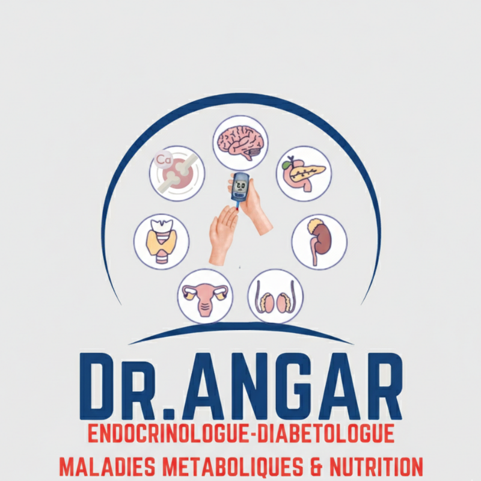

Score IDF-DAR 2026
1. Grossesse avec diabète
Oui
Non
2. Type de diabète
Diabète de type 1 / LADA
Diabète de type 2 ou autre
3. Durée du diabète
> 20 ans
10 – 20 ans
< 10 ans
4. Traitement du diabète (cocher tout ce qui s’applique)
Insuline en multi-injections /j
Insuline premix en 1 injection/jour
Pompe à insuline (boucle ouverte)
Système automatisé d’insulinothérapie
Insuline basale standard
Insuline basale ultra-longue
Insuline rapide
Glibenclamide / Glipizide
Sulfamides modernes / Répaglinide
≥ 2 traitements l'exception de l'insuline et Sulfamides / Glinides
Mesures hygiéno-diététiques seuls ou monotherapie a l'exception de l'insuline et Sulfamides/ Glinides
5. Hypoglycémies (4 dernières semaines)
Hypoglycémie asymptomatique
Hypoglycémie sévère dans les 4 dernières semaines
> 1 hypoglycémie /jour
6 – 7 épisodes/semaine
3 – 5 épisodes/semaine
1 – 2 épisodes/semaine
< 1 épisode/semaine
Aucune hypoglycémie dans les 4 semaines
6. Niveau d'HbA1c
> 9 %
7,5 – 9 %
< 7,5 %
7. Autosurveillance glycémique
Non réalisée
Sous-optimale
Effectue comme indiqué
CGM (tout type)
8. Urgences hyperglycémiques (Acidocétose / coma hyperosmolaire
dans le dernier mois
dans les 2 – 3 derniers mois
dans les 4 – 6 derniers mois
Aucune
9. Complications macrovasculaires
Instables
Stables
Aucune complication macrovasculaire
10a. Néphropathie (DFG)
< 30 mL/min
30 – 45 mL/min
45 – 60 mL/min
> 60 mL/min
10b. Autres complications microvasculaires
Trois complications
Deux complications
Une complication
Aucune
11. Fonction cognitive / fragilité
Trouble cognitif
Fragilité avancée
Fragilité légère à modérée
> 70 ans sans soutien familial
Normale
12. Travail physique
Intensité élevée
Intensité modérée
Faible intensité
13. Éducation thérapeutique ciblée sur le jeûne
Oui
Non
14. Durée du jeûne
≥ 16 heures
< 16 heures
Score total : 0
Score 0 – 3 points : Risque faible
Score 3,5 – 6 points : Risque modéré
Score > 6 points : Risque élevé
Contact professionnel :
Page Facebook – Dr ANGAR / MonEndocrino
Nombre de visites :
more information